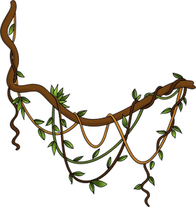
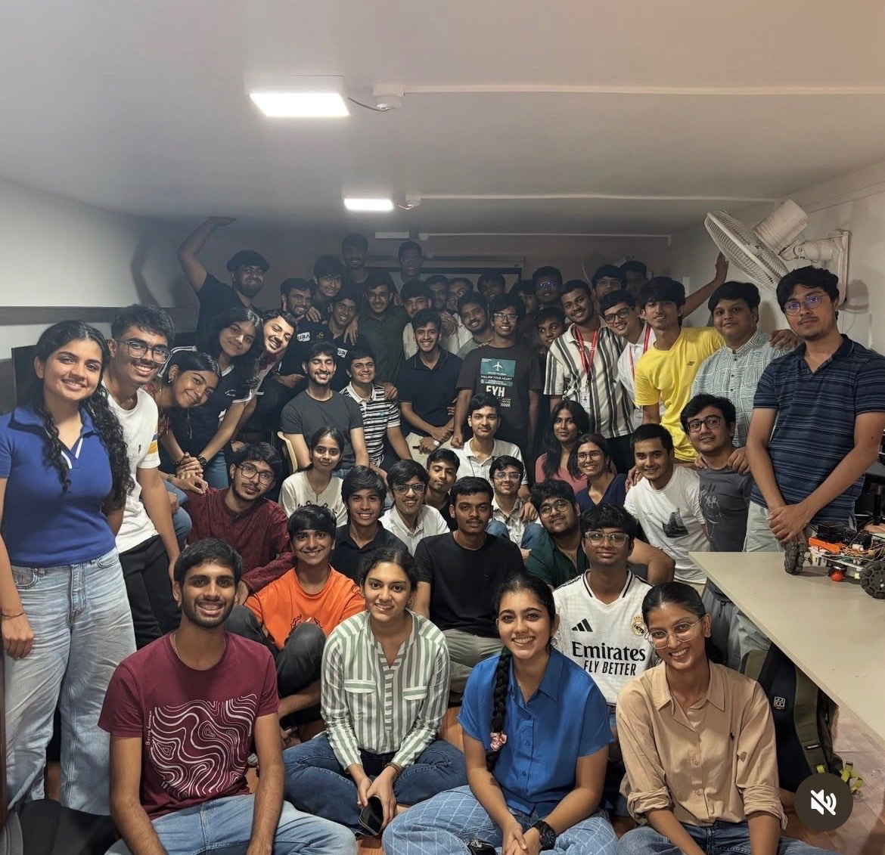

↑ click
gargigupta
@spons head, SRA VJTI · @academic general secretary, VJTI

; the people who inspire my drive to keep going. when i'm not buried in one of these rabbit holes, i'm probably reading.quadmove
completedan rl curriculum that worked its way up to ppo on a unitree go2 in mujoco, with a chance to pit my own ppo against stable-baselines3. most of the work, though, was reward design: a policy can pass every metric and still look completely wrong.
vits on cms detector data
completedimplemented l²vit and polaformer from scratch and pit them on cms detector images, doing joint jet classification and mass regression off a masked-autoencoder pretrain. linear attention keeps pace with softmax at o(n), and there's a clean tradeoff: l²vit takes classification, polaformer takes regression.
ampmove
in progressa ppo baseline on ironcub locomotion in mujoco, now benchmarking against amp in isaac lab. amp's discriminator scores how closely the policy matches mocap and that becomes the reward, so the question is whether a learned reward beats a hand-crafted gait.
tinydiff
in progressa reverse-mode autograd engine from scratch: it builds the computation graph on the forward pass and walks it backward for gradients, checked against pytorch autograd. scalar for now, extending toward tensors.
espressif systems
summer intern · may 2026 – presenttraining language models to act as conversational agents: they reason step by step through a dialogue to figure out what a user actually wants, then turn it into a valid, deployable product config. fine-tuned with grpo and sft so it generalises within the domain instead of memorising it.
lexlegis.ai
technical intern · jan 2026analysed the production rag pipelines on aws and elasticsearch, and built a newsletter prototype with ollama and qwen.
hdfc bank
ai/ml intern · jun – jul 2025built pipelines that pull structured data out of messy banking paperwork using ocr, opencv, and gemini flash, then benchmarked extraction tools to see what actually held up.